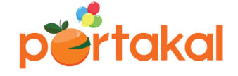
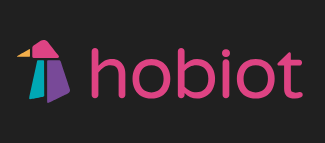
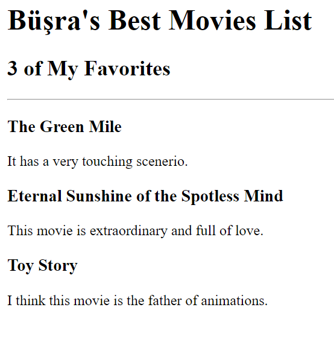

<!DOCTYPE html>
<html lang="en"></html>
<head>
    <meta charset="UTF-8">
    <title>My Resume</title>
</head>
<body>
    <h1>🎯Büşra Tekcan🎯</h1>

<h2>🎯Summary</h2>

<p>Analytical industrial engineering graduate with a passion for web development. Experienced in leveraging analytical thinking and problem-solving skills to create efficient solutions.</p>
<p>Proficient in front-end technologies including HTML, CSS, and JavaScript, with a strong understanding of user-centered design principles.</p>  
Eager to apply my unique blend of engineering and development skills to create innovative web projects that combine functionality with a seamless user experience.
<hr>
<h2>🎯Objective</h2>
Enthusiastic and motivated web development student seeking to leverage my skills and passion for coding to contribute to innovative web projects.
<hr>
<h2>🎯Education</h2>
<ul>
    <li>Bachelor of Industial Engineering - Uludağ University (2011-2015)
Bursa
<p>
<a href="http://endustri.uludag.edu.tr/tr/index.php?lang=tr">University Web Page</a>
</p>
<a href="https://www.google.com/maps?q=bursa&um=1&ie=UTF-8&sa=X&ved=2ahUKEwiL7LuzrvqAAxWZW_EDHRyNDO8Q_AUoAnoECAQQBA">Google Map Bursa Link</a></li>

<p><li>Bachelor of Child Development - İstanbul University (2020-2024)</li>
</p></ul>
<hr>
<h2>🎯Courses</h2>
<ul>
    <li>Basic Programming(2013)</li>
    <li>Sign Language Translatorship(2017)</li>
    <li>Montessori Tutorhood (2020)</li>
</ul>
<h2>🎯Projects</h2>
<ul>
    <li>
        <h3>Intership Projects</h3>
        <ol>
            <li>Renault Productivity Project (2014)</li>
            <li>Yarış Automotive Facility Layout Project(2015)</li>
            
        </ol>
    </li>
    <li>
        <h3>Web Pages and Blogging Projects</h3>
        <ol>
            <li>Online Shopping</li>
            
            <p><a href="https://hediyelikportakal.com/">Hediyelik Portakal</a></p>
            <li>Handcraft Sale</li>
            
            <p><a href="https://hobiot.com/blog/">Hobiot</a></p>
        </ol>
    </li>
    <li><h3>Web Develeopment Projects</h3>
        <ol>
        <li><a href="./public/birthday-invite.html">Birthday Invite Project</a>

<p></p>
</li>
<li><p>
    <a href="./public/movie-ranking.html">Movie Ranking Project</a>
</p>
<p></p></li>
</ol>
</li>

</ul>

<h2>🎯Skills</h2>

<ul>
    <li>Proficient in HTML, CSS, and JavaScript</li>
    <li>Experience with front-end frameworks (e.g., React, Vue)</li>
    <li>Familiarity with back-end technologies (e.g., Node.js, Express)</li>
    <li>Version control with Git and GitHub</li>
    <li>Responsive web design principles</li>
    <li>Strong problem-solving and debugging skills</li>
</ul>

<h2>🎯Languages</h2>
<ul>
    <li>English (Fluent)</li>
    <li>German (Beginner)</li>
    <li>Arabic (Beginner)</li>
</ul>

<h2>🎯References</h2>
Available upon request.
<h2>🎯Other</h2>
<ul>
 <li><a href="./about me.html">Contact Me</a></li>
 <li><a href="./hobbies.html">My Hobbies</a></li>
</ul>


<footer>
    <small>
      Copyright © Büşra Tekcan. All Rights Reserved.
    </small>
  </footer>


</body>